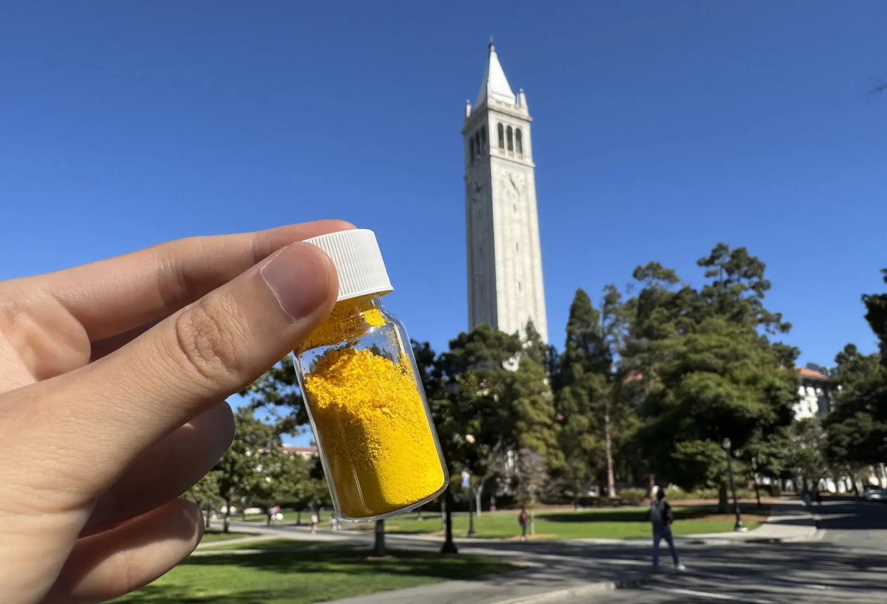

This new tech turns factory CO₂ and waste into building blocks.
Sumitomo Osaka Cement (SOC) showcased a concrete curb that was produced with carbon dioxide (CO2) captured within artificial limestone. Progressing toward net-zero carbon neutrality.
In today’s world, massive amounts of CO₂ are released into the air during cement production. Sumitomo Osaka Cement Co., Ltd. (SOC) is turning that around: by capturing CO₂ and using it to make “artificial limestone” during its manufacturing process, they’ve so far created about 500 kg of that material, which holds roughly 210 kg of CO₂ locked in solid form.
COF‑999 is a bright yellow powder developed at UC Berkeley that draws CO₂ right out of ambient air through literally microscopic pores. In tests, less than half a pound of the powder captured as much CO₂ in a year as a mature tree (about 20 kg) and can be reused many times with nearly no performance loss. Researchers say it could make large-scale carbon capture faster, cheaper and easier than many current methods.
Under the New Energy and Industrial Technology Development Organization (NEDO) Green Innovation Fund project, SOC has built a pilot facility to test the process of turning captured CO₂ and calcium-rich waste into artificial limestone. The goal is to scale this up so the cement industry (which accounts for roughly 7-8% of global CO₂ emissions) can use the technology broadly. In early trials, concrete products made this way showed significantly reduced CO₂ emissions compared to conventional materials.